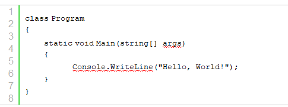
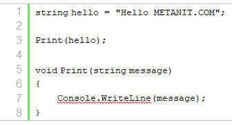
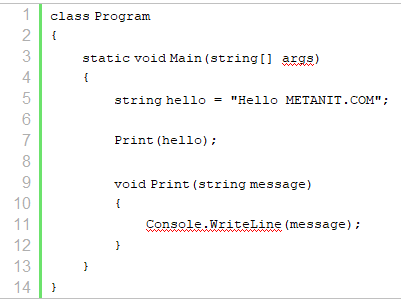
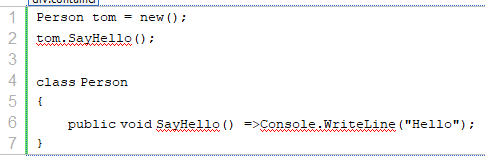
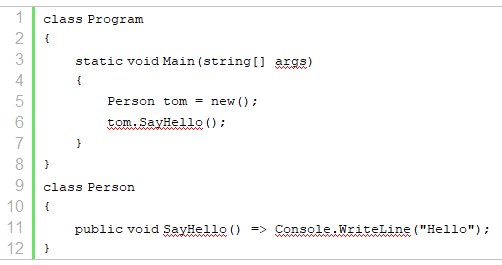
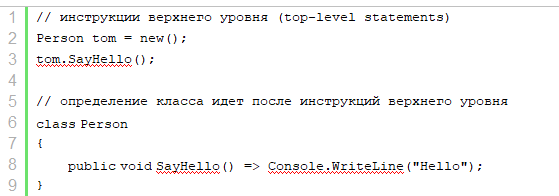

Точкой входа в программу на языке C#
является метод Main. Именно с этого метода
начинается выполнение программы на C#. И программа на C# должна
обязательно иметь метод Main.
В действительности название класса может быть любым (как правило, это класс Program, собственно поэтому генерируемый по умолчанию файл кода называется Program.cs). Но метод Main является обязательной частью консольного приложения. Поэтому выше представленный код фактически эквивалентен следующей программе:

Определение метода Main обязательно
начинается с модификатора static,
которое указывает, что метод Main - статический.
Возвращаемым типом метода Main обязательно
является тип void.
Кроме того, в качестве параметра он принимает массив строк - string[]
args - в реальной программе
это те параметры, через которые
при запуске программы из консоли мы можем передать ей некоторые
значения. Внутри метода располагаются
действия, которые выполняет программа.
Все Visual Studio создавали по умолчанию примерно такой код. Но начиная с Visual Studio 2022 нам необязательно вручную определять класс Program и в нем метод Main - компилятор генерирует их самостоятельно.
Если мы определяем какие-то переменные, константы, методы и обращаемся к ним, они помещаются в метод Main. Например, следующая программа верхнего уровня

будет аналогична следующей программе:

Если определяются новые типы, например, классы, то они помещаются вне класса Program. Например, код:

будет аналогичен следующему

Однако надо учитывать, что определения типов (в частности классов) должны идти в конце файла после инструкций верхнего уровня. То есть:

Таким образом, мы можем продолжать писать программы верхнего уровня без явного определения метода Main. Либо мы можем явным образом определить метод Main и класс Program:

И этот код будет выполняться аналогичным образом, как если бы мы не использовали класс Program и метод Main.